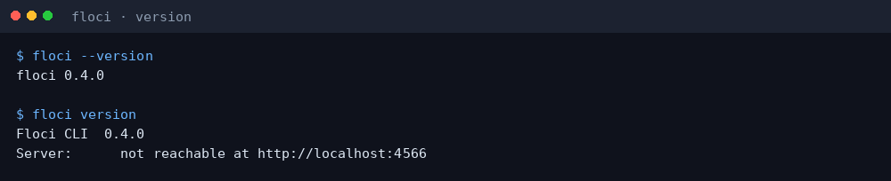
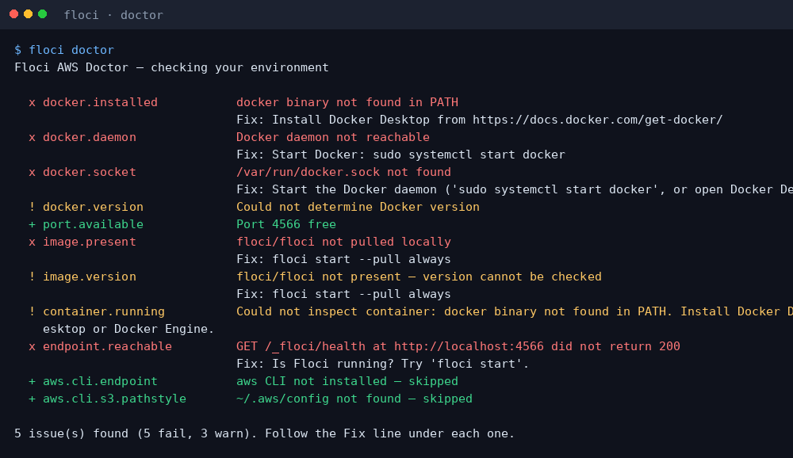
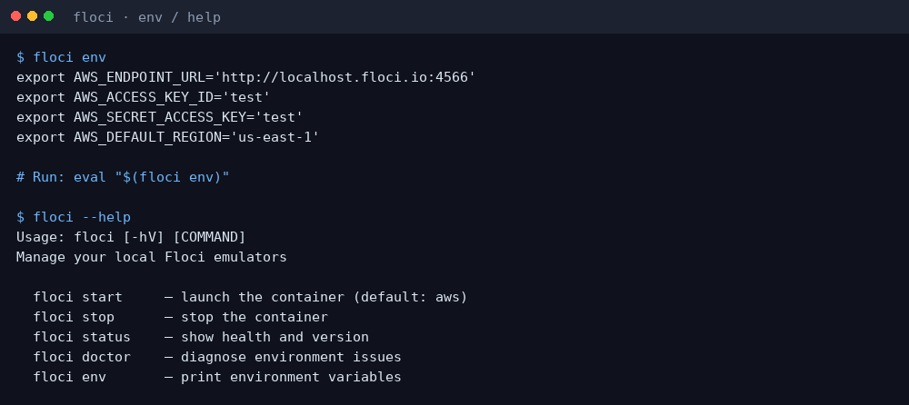
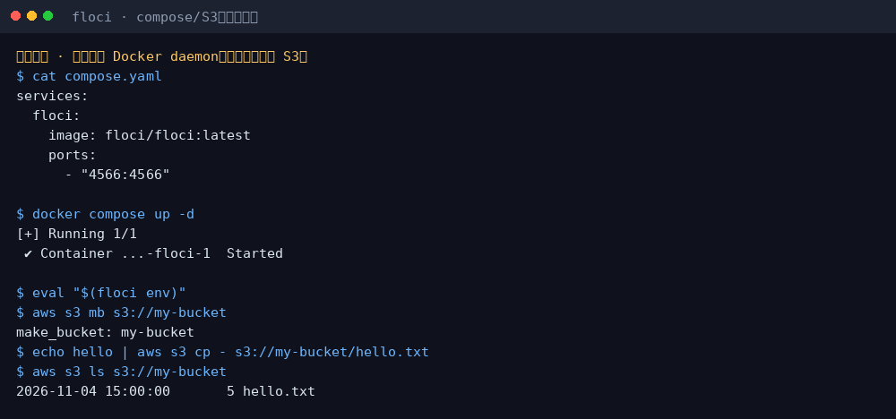

Floci 小白中文教程
社区非官方导读 · 上游 floci-io/floci · floci.io/floci
完整图文教程在 GitHub README：
30 秒上手
curl -fsSL https://floci.io/install.sh | sh floci --version floci doctor # 需 Docker： floci start eval "$(floci env)" aws s3 mb s3://my-bucket
截图



